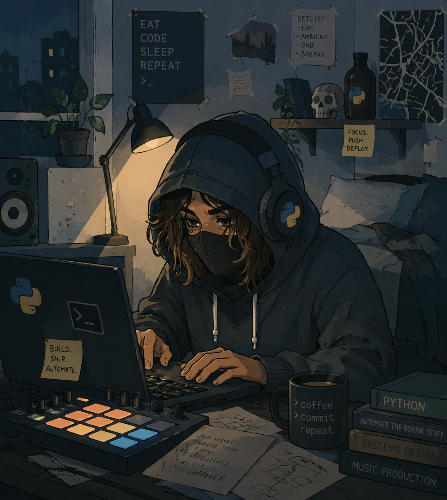

<!DOCTYPE html>
<html lang="es">
<head>
    <meta charset="UTF-8">
    <meta name="viewport" content="width=device-width, initial-scale=1.0">
    <meta name="color-scheme" content="dark">
    <meta name="theme-color" content="#1e1e1e">
    <meta name="description" content="Portfolio técnico de Martín Pentito — Web Developer, Computer Technician y Composer. HTML, CSS, JavaScript, Python, WordPress.">
    <meta property="og:title" content="Martín Pentito - Portfolio">
    <meta property="og:description" content="Portfolio técnico de Martín Pentito — Web Developer, Computer Technician y Composer.">
    <meta property="og:type" content="website">
    <meta property="og:image" content="assets/ThisJipi_img.png">
    <title>Martín Pentito - Portfolio</title>
    <link rel="icon" href="assets/ThisJipi_img_backgroundoff.png" type="image/png">
    <link rel="stylesheet" href="css/styles.css">
</head>
<body>
    <div class="container">
        <aside class="sidebar" aria-label="Perfil lateral">
            <div class="tag">&lt;img&gt;</div>
            <div class="profile-frame">
                
                <div class="profile-fallback" id="profile-fallback" aria-hidden="true">ThisJipi</div>
            </div>
            <div class="tag">&lt;/img&gt;</div>

            <div id="sidebar-content"></div>
        </aside>

        <div class="main-wrapper">
            <nav class="tab-bar" id="section-nav" hidden aria-label="Secciones del portfolio"></nav>
            <main class="main-content" aria-live="polite">
                <div class="status" id="loading-state"></div>
                <div id="main-content" hidden></div>
            </main>
            <footer class="statusbar" id="statusbar" hidden></footer>
        </div>
    </div>

    <script src="js/script.js"></script>
</body>
</html>
